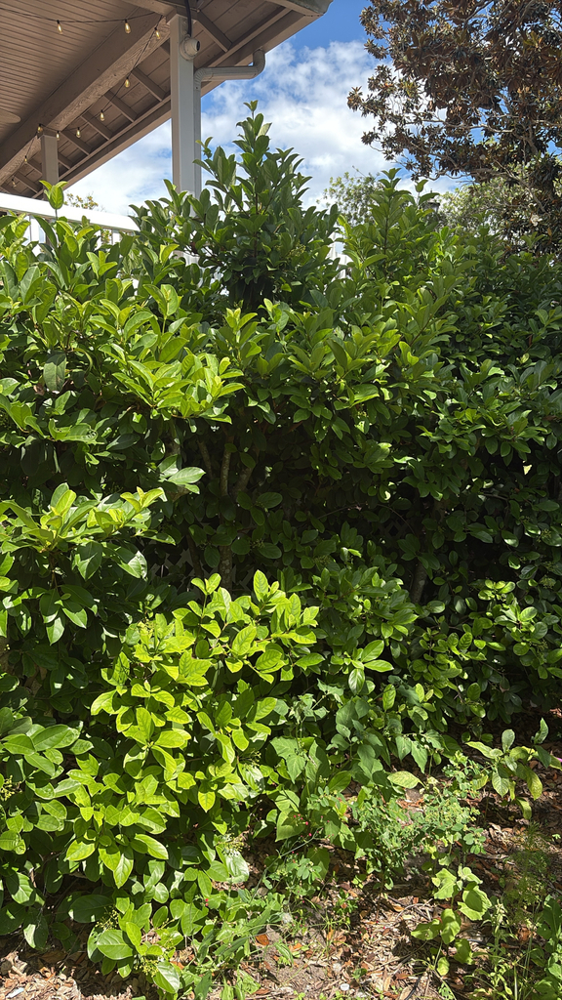

- The fragrant white flower clusters in spring give the plant its name — the scent is genuinely sweet and carries some distance. Small red berries follow, ripening to black, and birds eat them readily.
- Despite being planted across Florida for decades, and despite that bird-dispersed fruit, it is NOT listed by the Florida Invasive Species Council in any category, and it is not on the FISC Watch List. The UF/IFAS Assessment concludes it is not a problem species at this time, and it carries Florida-Friendly Landscaping approval.
- The dense evergreen canopy, fast growth, and tolerance of shade, drought and salt are why it became the default choice for hedging and screening in Florida. It takes hard shearing and comes back thicker, which is why so few specimens are ever allowed to reach their natural size or flower properly.
- For the same landscape job done by a Florida native, Viburnum obovatum (Walter's Viburnum) is the usual substitute — much smaller leaves, and a mass of white bloom in February when little else is open.
Non-native. Native to Japan, China, Korea, and Southeast Asia. Member of Viburnaceae (formerly Adoxaceae). Introduced as a landscape plant and now invasive in Florida and several other southeastern states.
- At Palma Sola, Sweet Viburnum lines the office and galleria, growing against a raised deck that sits six feet off the ground with a four-foot rail on top. The plants reach all of it and regularly push through the rails. Visitors who know this only as a tidy hedge shrub are consistently surprised by the scale.
- Once a year it gets a hard cut — far more severe than most people expect — and comes back fast and strong every time. Bright Futures high school volunteers do the cutback work to keep the walkway clear.
The fruit is eaten by birds, which disperse seeds into natural areas — the mechanism of its invasive spread. The flowers attract bees and butterflies in spring. The dense evergreen growth provides nesting structure.
The wildlife value is real but the invasive consequence is serious. Birds spreading seeds into hammocks and natural areas do more long-term ecological harm than the nectar and fruit provide benefit.
Small, white, fragrant, in flat-topped clusters. Spring bloom.
Small, oval, red ripening to black. In clusters. Eaten by birds.
Opposite, glossy dark green, ovate with a finely toothed margin. Dense, persistent.
Evergreen shrub to small tree, 10 to 20 feet. Fast growing. Dense canopy.
The fragrant white flower clusters in spring are the seasonal identification feature. The glossy dark opposite leaves are the year-round marker. Compare with Walter's Viburnum (Viburnum obovatum) — native alternative with smaller leaves and similar landscape function.
The fruit isn't eaten — it isn't considered seriously toxic, but it isn't a food plant either, so avoid ingestion as a precaution.
For dogs, eating a lot of fruit may cause mild stomach upset.


- © Randall Carter (CC-BY-NC), via iNaturalist
- © David McSwain (CC-BY-NC), via iNaturalist
- © Harrison Mello (CC-BY-NC), via iNaturalist